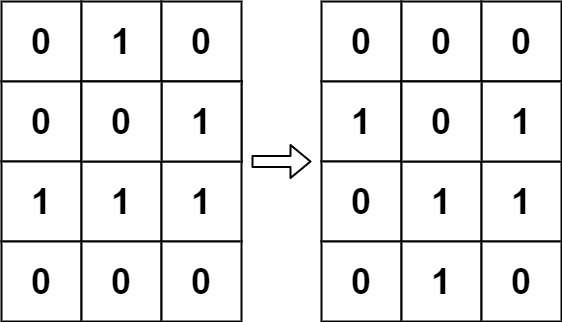
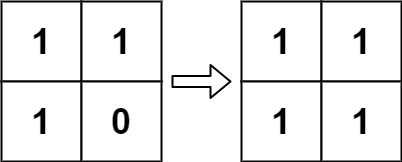

289. 生命游戏
原地双状态编码：下一代状态写进第二位，低位保留当前状态；扫完全部格子再统一右移一位结算。
思路
- 坑只有一个：所有细胞同时更新，直接覆盖会让后面的格子数到新状态。
- 用第二位存下一代：下代活就
board[i][j] |= 2，低位原样不动。 - 数邻居时
& 1只看低位，读到的永远是当前状态，互不干扰。 - 四条规则并成一句：活细胞有 2~3 个活邻居就活，死细胞恰好 3 个活邻居就复活；全写完
>>= 1统一落位。
图解
最优解
1class Solution {2 public void gameOfLife(int[][] board) {3 int m = board.length, n = board[0].length;4 // 第一遍：下一代状态写进第二位，低位保留当前状态5 for (int i = 0; i < m; i++) {6 for (int j = 0; j < n; j++) {7 int live = countLive(board, i, j);8 boolean next = board[i][j] == 1 ? (live == 2 || live == 3) : live == 3;9 if (next) board[i][j] |= 2;10 }11 }12 // 第二遍：整体右移一位，第二代落位，原地完成13 for (int i = 0; i < m; i++)14 for (int j = 0; j < n; j++)15 board[i][j] >>= 1;16 }17 18 // 数八邻居的活细胞数：& 1 只看低位，不受第二位干扰19 private int countLive(int[][] b, int i, int j) {20 int cnt = 0;21 for (int di = -1; di <= 1; di++)22 for (int dj = -1; dj <= 1; dj++) {23 if (di == 0 && dj == 0) continue;24 int r = i + di, c = j + dj;25 if (r >= 0 && r < b.length && c >= 0 && c < b[0].length) cnt += b[r][c] & 1;26 }27 return cnt;28 }29}题目
根据 百度百科 ， 生命游戏 ，简称为 生命 ，是英国数学家约翰·何顿·康威在 1970 年发明的细胞自动机。
给定一个包含 m × n 个格子的面板，每一个格子都可以看成是一个细胞。每个细胞都具有一个初始状态： 1 即为 活细胞 （live），或 0 即为 死细胞 （dead）。每个细胞与其八个相邻位置（水平，垂直，对角线）的细胞都遵循以下四条生存定律：
- 如果活细胞周围八个位置的活细胞数少于两个，则该位置活细胞死亡；
- 如果活细胞周围八个位置有两个或三个活细胞，则该位置活细胞仍然存活；
- 如果活细胞周围八个位置有超过三个活细胞，则该位置活细胞死亡；
- 如果死细胞周围正好有三个活细胞，则该位置死细胞复活；
下一个状态是通过将上述规则同时应用于当前状态下的每个细胞所形成的，其中细胞的出生和死亡是 同时 发生的。给你 m x n 网格面板 board 的当前状态，返回下一个状态。
给定当前 board 的状态，更新 board 到下一个状态。
注意 你不需要返回任何东西。
示例 1：

输入：board = [[0,1,0],[0,0,1],[1,1,1],[0,0,0]] 输出：[[0,0,0],[1,0,1],[0,1,1],[0,1,0]]
示例 2：

输入：board = [[1,1],[1,0]] 输出：[[1,1],[1,1]]
提示：
m == board.lengthn == board[i].length1 <= m, n <= 25board[i][j]为0或1
进阶：
- 你可以使用原地算法解决本题吗？请注意，面板上所有格子需要同时被更新：你不能先更新某些格子，然后使用它们的更新后的值再更新其他格子。
- 本题中，我们使用二维数组来表示面板。原则上，面板是无限的，但当活细胞侵占了面板边界时会造成问题。你将如何解决这些问题？
题面取自力扣当前版本。
数据快照 2026-11-04。题面版权归力扣所有，本站点仅供本人学习使用，请勿对外发布。